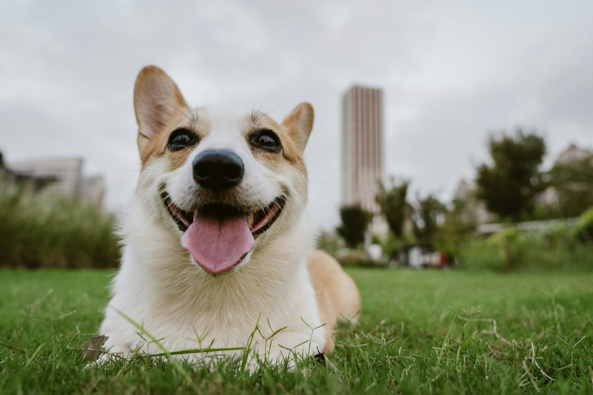
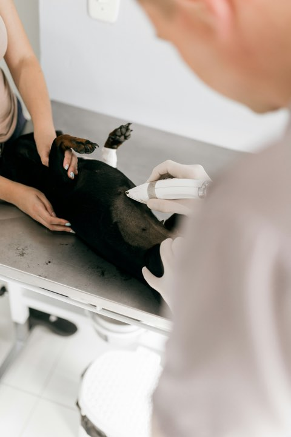
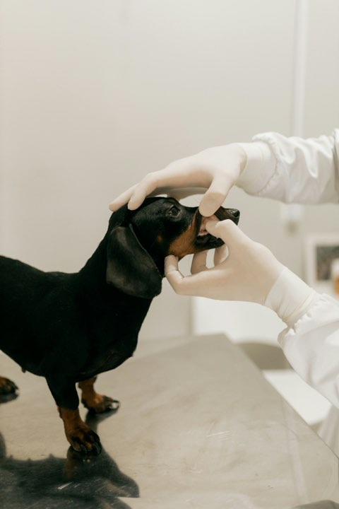
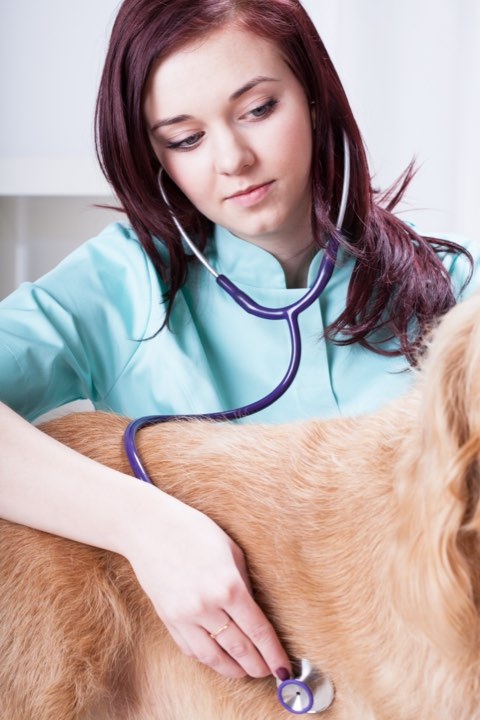
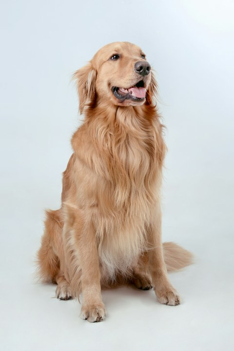
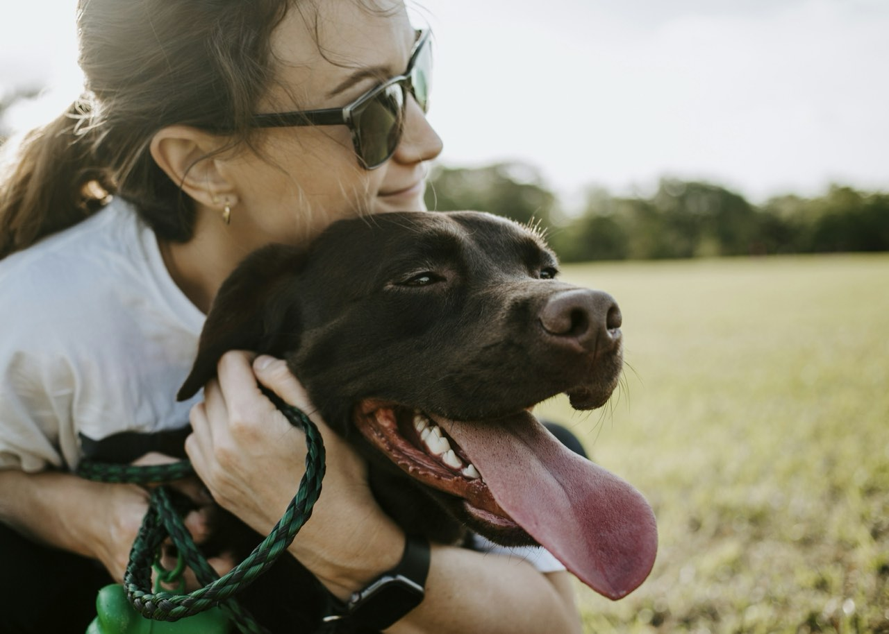

Accepting new patients
Yes, we’re taking new patients.
Full-service small animal care with online booking, Saturday hours and refills you can request without phoning. We are open to new patients today, which is not true of most practices near here.

- Accepting new patients
- Online booking
- Saturday appointments
- First puppy visit free
Services
Care we provide
Routine to surgical, with the same team seeing your animal each time wherever we can manage it.
Wellness & vaccination
Annual exams, vaccines and parasite prevention on a schedule we track for you, so you get a reminder rather than a guilty realisation.
Puppy & kitten packages
First visit free. Everything the first year needs bundled at a set price, including spay or neuter and microchipping.
Dentistry
Under anaesthetic with full monitoring and dental radiographs. Most dental disease is invisible above the gumline.
Surgery & diagnostics
In-house lab, digital radiography and ultrasound, so most answers come the same visit rather than next week.
Results
“We rang six practices with a new puppy and five said they weren’t taking anyone. Willowbank’s site just said it plainly and let me book there and then.”Hannah W.New client, Labrador puppy

- AAHA Accredited
- Fear Free Certified
- AVMA Member
- Cat Friendly Practice
Process
Your first visit
Especially for a first pet, where nobody tells you what actually happens.
Book online
Pick a real slot on a real calendar, any hour. You get a confirmation, not a promise to call you back.
Come in
Bring any records you have. First visits run long on purpose, because we’d rather answer everything now.
A plan, not a bill
You get a written care plan with costs before anything is done, and we’ll tell you what can wait.
Stay in touch
Reminders when things are due, refills online, and a direct line for the questions that feel too small to phone about.
Yes, new patients
The first visit.
The exam room, the scale, and the people who will know your animal’s name by the second visit.






Contact
New here, or need a vet today?
We’re accepting new patients and hold same-day slots for sick visits. Book online in about a minute, or call and we’ll sort it.
Emergencies after hours: call and our recording routes you to the on-call emergency hospital.